หลังจากการบวก ต่อมาเป็นการแสดงการคูณเลข Floating Point ระหว่าง 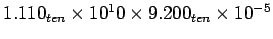 โดยสมมุติให้มีเพียงสี่หลักสำหรับ Significant และ 2 หลัก สำหรับ Exponent
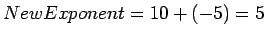
เราสามารถพิจารณาได้ในลักษณะของ Biased Exponent จะได้ 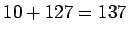 และ 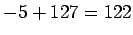 เพราะฉะนั้น
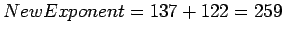
ซึ่งค่า Exponent มีขนาดใหญ่เกินกว่าขนาดข้อมูล 8 บิต เนื่องจากการบวก Exponent มีค่า Bias ซ่อนอยู่ถึงสองครั้ง
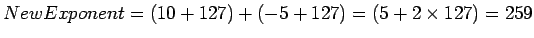
ดังนั้นเราต้องลบค่า Biased ออกหนึ่งครั้งให้ได้ค่าที่ถูกต้อง
1.110
x 9.200
-------
0000
0000
2220
9990
--------
10212000
จากที่ตัวคูณมีทศนิยมสามหลักของตัวคูณทั้งสองตัว เพราะฉะนั้นจะมีเลขทศนิยม 6 หลัก จะได้ผลลัพธ์เท่ากับ
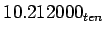
สมมุติให้มีเพียงสามหลักหลังจุดทศนิยม เราจะได้ผลคูณ 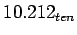
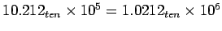
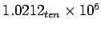
ทำการปัดเศษจะได้
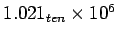
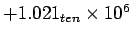
รูป 3.16 แสดงขั้นตอนการคูณ Floating Point